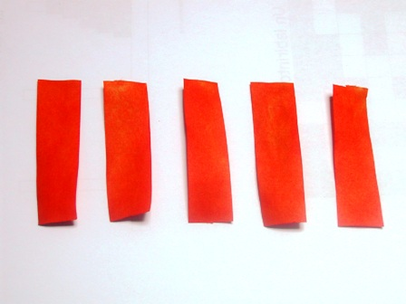
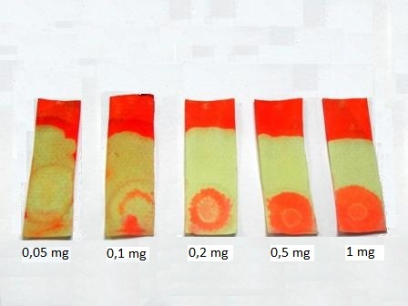

E' il momento di mettere alla prova l'esanitrodifenilammina preparata per la ricerca microchimica del potassio; si tratta di un buon vecchio metodo storico e quindi, dal mio punto di vista, molto interessante.
Ecco letteralmente quanto riportato su quel magnifico libro che è il Treadwell edito dalla Vallardi; la mia edizione è del 1963 e si pensi che questo fondamentale volume di chimica analitica ancora negli anni sessanta aveva quelle pagine, di una bellissima carta color pergamena, unite tra di loro con il metodo di rilegatura da separare manualmente col tagliacarte: incredibile! (Sic transit!).
- Preparazione del reattivo per il potassio: 200 mg di dipicrilammina vengono sciolti in 2 ml di Na2CO3 2N, diluendo poi con 15 ml di acqua e filtrando.
(Si ottiene una bella soluzione rossa, estremamente colorante e sporcante: fare attenzione! Ved. commento nel post dedicato.
Procedura del Treadwell:
- Una striscia 3 x 6 cm di carta da filtro, bagnata col reattivo, viene successivamente asciugata, ponendola su un vetro di orologio lambito da una corrente di aria calda.
Su questa striscia essiccata si pone una goccia della soluzione neutra in esame.
Si riasciuga in corrente d'aria e si tratta tutta la striscia con HNO3 0,1 N.
In presenza di potassio compare una macchia rossa in corrispondenza del punto bagnato con la soluzione in esame, mentre il rosso del resto dello striscio diventa giallo chiaro. -
Ho preparato come test cinque soluzioni che in una goccia contenessero rispettivamente 1 mg, 0,5 mg, 0,2 mg, 0,1 mg e 0,05 mg di cloruro di potassio ed ho eseguito il saggio su altrettante cartine da filtro come sopra descritto.
Ecco il risultato, con la concentrazione massima a destra e minima a sinistra.


Le cartine alla DPCA e rivelate con HNO3 - da 0,05 mg a 1 mg K+
Come si vede la sensibilità del metodo è elevata, riuscendo a rivelare, mettendoci un po' più di accuratezza di come ho fatto io velocemente, un cinquantesimo di milligrammo di ione potassio.
Qui si conclude la mia saga di questa famiglia, secondo questa genealogia:
- il trisavolo clorobenzene ha generato...
- ... il bisnonno 2,4-dinitroclorobenzene, che ha generato...
- ... la nonna N-(2,4-dinitrofenil)-fenilammina, che ha generato...
- ... la madre 2,2',4,4'-tetranitrodifenilammina, che ha generato...
- ... la figlia 2,2',4,4',6,6'-esanitrodifenilammina
ovvero la giovane bionda dipicrilammina, poi felicemente maritatasi con quel salamone del potassio, che si è fatto imprigionare a dovere, precipitando in rosso con la signora dell'altra volta.
Ciao! E adesso gli "esperimenti" fateli voi per un po'.